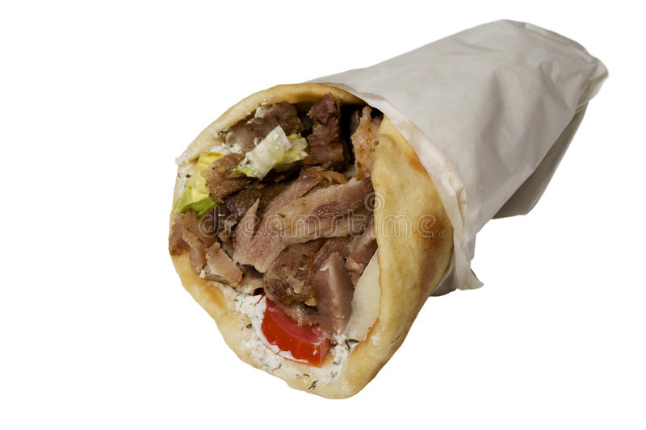

Gyro

Description
Directly robbed and plagiarized from this link.
Nutritional Facts: Per Serving: 402 calories; protein 25.9g; carbohydrates 34g; fat 25.1g; cholesterol 91.4mg; sodium 1291.8mg.
Ingredients
- cooking spray
- 3 lbs ground lamb
- 1 large egg
- 12 (6 inch) pita breads, warmed
- 1 head iceberg lettuce, finely shredded
- 5 medium Roma tomatoes, diced
- 1 medium red onion, diced
- 1/2 cup tzatziki sauce, or more to taste
Steps
- Preheat the oven to 275 degrees F (135 degrees C). Spray a large loaf pan with cooking spray.
- Combine lamb, Greek seasoning, and egg in a bowl. Mix until ingredients are very well combined (overmixing is preferable here.)
Firmly press mixture into the prepared loaf pan, making sure there are no air pockets under the meat. Cover with foil.
- Cook in the preheated oven until an instant-read thermometer inserted into the center reads at least 160 degrees F (70 degrees C), about 2 hours.
- Remove from the oven and let rest, covered, until all the grease on top is absorbed, 15 to 20 minutes.
- Remove meat from the pan and cut into thin slices.
- Load meat into the center of warmed pitas. Top with lettuce, tomatoes, onion, and tzatziki sauce. Serve immediately.